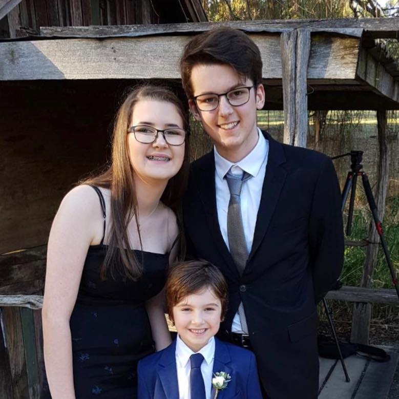

Team Profile
Cassie
I was originally born in Australia, but moved to Hawaii when I was five and lived there for 12 years. After highschool I moved back over to Australia and mostly worked full time in hospitality. Currently I now work in tech support, and in my free time I like to play video games, and spend time researching cool tech. My IT experience mainly revolves around the basic troubleshooting that I have learned while on the job, and apart from that I have not had much former IT experience. I became interested in IT after I began to play video games, and my passion for IT has since grown working in the IT Industry.
Andrew
My name is Andrew and I was born here in Australia, but come from a mixed background – my father is Romanian and my mother is Filipino. I completed my schooling at Woorana Park Primary School, Waverley Christian College and studied at Monash Uni for a bit. I currently work as a tradie part-time doing rigging (steel construction). I first gained an interest in IT at a very young age when I used to play games on my PSP. Since then I’ve been fascinated with having powerful devices that can be used anywhere, resulting in my interest in developing and maintaining both apps and websites suitable for the everyday user. Some hobbies of mine include soccer, snowboarding, skateboarding and camping
Afiq

I was born in Malaysia and have been living there my whole life up until now, pursuing my studies here in Melbourne, Australia. Sport is mainly a part of who I am as a person. I am always intrigued to associate myself with sport activities especially in soccer since I was 8, up until now. My interest in IT sparked when I was in high school where I was taught programming language. The knowledge of it made me understand better at how things operate behind the scenes, in the technology industry. Therefore, it encourages me to learn more of its language as it is the future in almost every industry there is.
Rodrigo
My name is Rodrigo Fernandez and I am an international exchange student. I was born and raised in Mexico City, and I have lived there all my life. In highschool I attended Mercersburg Academy, PA, United States for one year, and Laval University, Quebec, Canada for one summer. Currently enrolled at the Tecnológico de Monterrey CSF, and studying a degree in Business Intelligence. I know the very basics of python, r, and SQL, and have a little more advanced knowledge in visualisation tools such as power bi and tableau. Fun Fact, played rugby back home for two years and only lost one match, can juggle up to three objects, lately enjoy playing padel, a sport similar to tennis, and casual Xbox gamer.
Daniel 
Hi! My name is Daniel Dinh and I am a student studying the Bachelor of Information Technology at the Royal Melbourne Institute of Technology (RMIT). My student number is s3944753 and my email is s3944753@student.rmit.edu.au. My nationality is Vietnamese but I was born here as my parents immigrated from Vietnam to Melbourne, Australia. I am able to speak fluent English, broken Vietnamese, a tiny bit of Italian (learnt from high school) and know some Japanese words (from anime). I graduated high school only just last year and spent around two and a half years of my VCE experience learning from home. My hobbies include playing soccer, volleyball, gaming and watching anime. One fact about me is that I won $500 from playing in an official real life Pokemon Tournament in 2019.
Simon
My name is Simon Nguyen and I am 19 years old. My nationality is Vietnamese and Chinese but I was born in Melbourne Australia. I love to hang out with my friends and play video games. My interest is IT and hence why I am currently doing bachelor’s of Information Technology and I am hoping to do software engineering as my career.
Cameron 
My name is Cameron Mitchell (Student ID s3971747), and I am 23 years old. Born and raised in Melbourne, Australia, I came to love IT after I received a role to study computer systems more intently in primary school. This turned into an enjoyment of video games, and I have played them ever since, as well as enjoying time spent with close friends. Previously studying a Bachelor of Engineering and Computer Science at Monash University for 4 years, I have a decent knowledge of the IT field.
Group Processes
How well did the group work together in Assignment 2?
Beginning assignment two was a little rocky at the start. None of us really knew each other, knew how each other worked, or knew what kind of project we wanted to develop. Like any group, it was nerve wracking figuring out each other's roles in the group as no one wanted to step on anyone's toes nor did anyone want to be too overbearing or be considered as not having enough impact. I think that because everyone was rather passive at the start of the assignment definitely created a bit of lag when attempting to actually begin work. After our project idea was developed however, it became a lot clearer what roles each person in our group could play and it became a lot easier to organise and plan.
The biggest thing we struggled on in assignment two was organising times for everyone to be able to group up and discuss the project. If someone was free, others were at work or had other commitments, and for such a large group, organising 7 people to be in one place at one time outside of class proved to be quite challenging. This led to a lot of last minute organising, impromptu meetings, and an overall haphazard approach to the productivity of the assignment. Assigning parts of the project to each person at the beginning however was really good as it allowed group members to be able to manage their time with knowledge of what their part entailed. It allowed for us to be a lot more flexible when it came to when work was done. I do think however that a final revision of everyone's parts definitely helped the project appear and feel more succinct as it allowed each part to flow better into each other, rather than one person's part having no real connection to others.
Will you be introducing any changes for Assignment 3?
For assignment 3 we will be splitting up the group of 7 into 1 group of 3 (the app group) and another group of 4 (the website group). This should allow for us to be able to organise meetings a lot easier and allow work to be split apart so that both aspects of our project can be managed.
We will be conducting just a couple whole group meetings so that the app group and the website group will be able to touch base and ensure that both components are reflective of each other.
Career Plans
Compare and contrast ideal jobs for everyone in group
Within the realm of IT, there are many different career pathways one can pursue, from cybernetics and robotics, to data science and industry development. IT can be applied to many different areas and it's no surprise that within our own group, there would be many different pathways and career options that are of interest. Out of the 7 people in the group, there are 4 people who have similar ideal jobs for their future careers and 3 whose ideal career pathways lead elsewhere. Starting off with Afiq who wants to be a program developer, Daniel and Andrew as front-end web developers and Simon who aspires to be a software engineer. All these jobs appear to be quite closely related as most fall into the same area in terms of programming. On the other hand, Cassie wants to be an criminal intelligence analyst which works alongside law enforcement,analysing intelligence collected around the world in order to identify threats and make decisions. Cameron’s ideal job is quality assurance tester, which is different from the others as he ensures that the business’s product is in good quality. Finally, Rodrigo aspires to be a cloud consultant and work alongside data analytics in Google cloud professional services. Thus it is likely Rodrigo would be focusing on familiarising companies with available cloud computing services, helping them to make decisions that benefit their own agenda and operations.
What common elements are there?
Some common elements are that all of our ideal jobs link to Information Technology in some way. One of which is that the students who have their ideal job as front-end web developers can use the same application as those who aspire to be a program developer and a software engineer. An example of an application that can be used could be Atom, which allows the users to choose either html, which would focus more on web developing, which suits best for Daniel and Andrew, or Java and Python which will focus more on program developing which suits best for Simon and Afiq. Moreover, all these ideal jobs have one common element that comes into play, that is all of them incorporated in analysing something to achieve the end result. For example, front-end web developers must analyse first on how they would create a website that would align with their businesses motto while those that are interested in working on programs need to analyse how they code in a way that would meet the business’s objectives. As such, it will apply the same to Cameron’s ideal job that is to analyse the products to ensure that they are in good quality, while for Cassie’s she would be analysing criminal intelligence and lastly Rodrigo analysing on cloud computing services that will help make better decisions and benefit the business’s agenda and operations.
What differentiates each position from the others?
What differentiates each position from the others is that for front-end web developers, they actually focus on creating websites which none of the other career paths focuses on. Same with the programming, which focuses more on using python and code in a way that ensures that computer software and functions work properly. While with a quality assurance tester, it ensures that all products are made in a quality fashion, which none of the other career paths do, this specific career path will not be focusing on using java, python or HTML. Lastly, for the cloud computing services, it is mainly focusing on benefitting the business’s agenda and operations which is different from the others.
How similar or different are your career paths across the group?
Program developer is a very similar career path to front-end web developers and cloud consultants as programmers need certain skills to code well. Some of these certain, hard skills that programmers are required to earn is web developing and cloud computing. As you can see, these skills clearly align with some of the other students in our group with their career paths. Hence, those that would want to choose a front-end web developer or a cloud consultant as their career paths, they would also need to have a deep understanding of other IT career paths, showing that these paths are not stand-alone. Furthermore, the career paths that have just been listed are very different to Cameron’s ideal job (quality assurance tester) as it does not require heavy understanding in web programming or cloud computing when pursuing this career as it requires a more hands on to check if the products are in good quality.